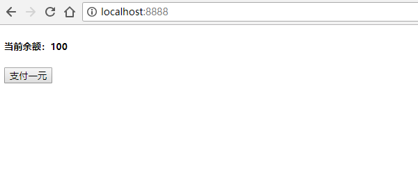

JSONP 是服务器与客户端跨源通信的常用方法。
它的基本思想是，通过动态创建 <script> 元素向服务器发起请求，这种做法不受同源政策限制。服务器收到请求后，将数据放在一个指定名字的回调函数里传回来。
通过一个简单的例子来理解 JSONP 到底是什么。
Demo 地址：https://github.com/JinChengJoker/jsonp-demo
简易服务器
用 node.js 搭一个简易的服务器 server.js：
var http = require('http')
var url = require('url')
var fs = require('fs')
var port = process.argv[2]
// 判断是否传入端口号参数
if(!port) {
console.log('请指定端口号！\n例如：node server.js 8888')
process.exit(1)
}
// 创建服务器
var server = http.createServer(
function(request, response) {
var temp = url.parse(request.url, true)
var path = temp.pathname
var query = temp.query
console.log('HTTP 请求路径为：\n' + path)
// 判断 HTTP 请求路径
if(path === '/') {
var data = fs.readFileSync('./index.html', 'utf8')
response.setHeader('Content-Type', 'text/html; charset=utf-8')
response.write(data)
response.end()
} else {
// 找不到对应的请求路径，返回错误码404
response.statusCode = 404
response.end()
}
}
)
// 监听传入的端口号
server.listen(port)
console.log('监听' + port + '成功！\n请在浏览器打开 http://localhost:' + port)
访问服务器
启动服务器 node server.js 8888，监听 8888 端口。
在浏览器访问 http://localhost:8888/，返回当前文件夹下的 index.html：
<!DOCTYPE html>
<html lang="zh-Hans">
<head>
<meta charset="UTF-8">
<meta name="viewport" content="width=device-width, initial-scale=1.0">
<meta http-equiv="X-UA-Compatible" content="ie=edge">
<title>jsonp demo</title>
</head>
<body>
<h5>当前余额：<span id="amount">100</span></h5>
<button id="btn">支付一元</button>
<script>
btn.addEventListener('click', function(e) {
amount.innerText -= 1
})
</script>
</body>
</html>

简易数据库文件
在当前文件下创建 db 文件，存入数字 100。
修改 index.html 文件，将 100 替换为占位符 &&amount&&：
<span id="amount">&&amount&&</span>
修改 server.js 文件，读取 db 文件数据，然后将响应数据中的占位符 &&amount&& 替换为真实数据：
if(path === '/') {
var amount = fs.readFileSync('./db', 'utf8')
var data = fs.readFileSync('./index.html', 'utf8')
data = data.replace('&&amount&&', amount)
response.setHeader('Content-Type', 'text/html; charset=utf-8')
response.write(data)
response.end()
}
重启 server.js，再次访问 http://localhost:8888/，结果与之前一致。
创建 script 元素发起请求（SRJ 方案）
可以在 index.html 中动态创建一个 <script> 元素，并用它的 src 属性来发起请求，同时监听 load 和 error 来判断是否执行成功，并在之后删除该 <script> 元素：
btn.addEventListener('click', function() {
addScriptTag('/pay')
})
function addScriptTag(src) {
var script = document.createElement('script')
script.src = src
document.body.appendChild(script)
script.onload = function(e) {
e.currentTarget.remove()
}
script.onerror = function(e) {
e.currentTarget.remove()
}
}
添加 server.js 响应：
else if(path === '/pay') {
var amount = fs.readFileSync('./db', 'utf8')
amount -= 1
fs.writeFileSync('./db', amount)
response.statusCode = 200
response.setHeader('Content-Type', 'application/javascript')
response.write('amount.innerText = ' + amount)
response.end()
}
重启 server.js，再次访问 http://localhost:8888/。
因为在 HTTP 响应的 Header 中设置了 Content-Type 为 application/javascript，且把返回的结果放入了 <script> 元素中，所以此时点击按钮，就会请求服务器修改数据，并且会执行由服务器返回的 javascript，无刷新的局部更新到页面中。
这叫 SRJ（Server Rendered JavaScript），是在 Ajax 出现之前的方案。
JSONP
因为通过动态创建 <script> 元素向服务器发起请求，不受同源政策限制，所以在上面的方案中，是可以直接由它向跨源网址发出请求的。
但是这种方案，有一个很大的缺陷就是前后端太过耦合：
response.write('amount.innerText = ' + amount)
于是就有了 JSONP（JSON with Padding），它是 JSON 的一种“使用模式”。
我们在请求的查询字符串添加一个 callback 参数，用来指定回调函数的名字，这对于 JSONP 是必需的。
btn.addEventListener('click', function() {
// 每次请求都定义一个随机的函数
var functionName = 'jsonp'+ parseInt(Math.random()*1000000)
window[functionName] = function(res) {
// 请求成功后要执行的操作
amount.innerText = res.amount
delete window[functionName]
}
addScriptTag('/pay?callback=' + functionName)
})
服务器收到请求后，会将数据放在回调函数的参数位置返回。由于 <script> 元素请求的脚本，会直接作为代码运行，这时，只要浏览器定义了相应的函数，该函数就会被立即调用。
else if(path === '/pay') {
var amount = fs.readFileSync('./db', 'utf8')
var callbackName = query.callback
amount -= 1
fs.writeFileSync('./db', amount)
response.statusCode = 200
response.setHeader('Content-Type', 'application/javascript')
response.write(`
${callbackName}({
amount: ${amount}
})
`)
response.end()
}
这就是 JSONP。
注意
-
jQuery 也封装了 JSONP，它帮我们搞定了所有的操作。虽然调用方式与 Ajax 相同，但是跟 Ajax 没有关系。
$.ajax({ url: "/pay", dataType: "jsonp", success: function(res) { amount.innerText = res.amount } }) -
JSONP 不支持
POST请求。因为 JSONP 是通过动态创建<script>实现的，但是<script>标签只能用GET请求，不支持POST请求。